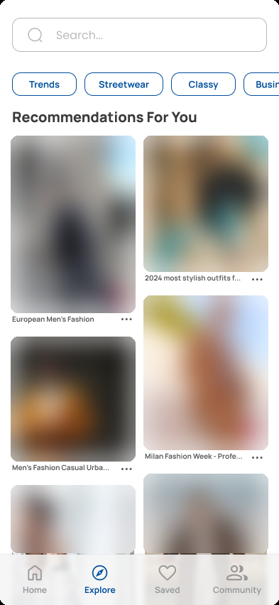
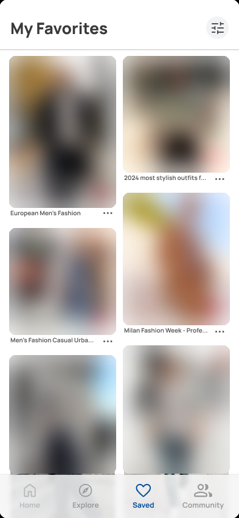

Clohive
From the Archives
A style discovery app for young men that I planned and designed but never built.
The problem
Guys getting into fashion end up doing a lot of research on their own. The information is out there, but it isn’t in one place, so the process can feel slow, overwhelming and short on inspiration.
Where it came from
When I started my first professional job, I struggled to find my own style and to know what was appropriate to wear. I watched a lot of YouTube videos, looked up whether colors matched, browsed Pinterest for outfit ideas, tried things on and asked my family for feedback. That experience is where Clohive came from.
The idea
Clohive was meant to be one place for young men to work out their style. The designs include personalized outfit recommendations, a short style quiz, an Explore page for browsing by style, a list of saved outfits, and a Community page for questions like how to balance streetwear and smart casual.
I worked on it during a stretch when I thought I wanted to go into product management.
The research plan
The plan started from one question:
How can we create a more enjoyable and engaging experience for fashion-forward males to find their style?
It set out to learn how young men find their style, how they keep building a wardrobe, and where it gets hard. The key questions were:
- How long would it take for males to find their style?
- Where do males find inspiration?
- How do males keep track of their outfits that they love?
The interview script covered four areas: what style means to someone, the challenges they run into, where they find inspiration, and how they build and maintain a wardrobe.
The designs






Mockups designed in Figma. The photos were placeholders from the web, so I’ve blurred them here.
Why it stopped
I also tried to collect survey responses. Finding participants was harder than I expected, so I paid for participant recruitment. When the responses came in, some of the timestamps and answer patterns looked suspicious. I couldn’t confirm which ones were genuine, so I didn’t treat any of them as findings.
The project stopped there, before any user testing or development, and my focus has since moved to accounting.
What I took from it
Finding the right people to ask was harder than writing the questions. Paying for responses didn’t make them reliable, and checking them before trusting them mattered more than I expected.
Not using data I couldn’t stand behind is a habit I want to bring into accounting.
The rest of the story
My work in event operations, and where I’m headed in accounting.